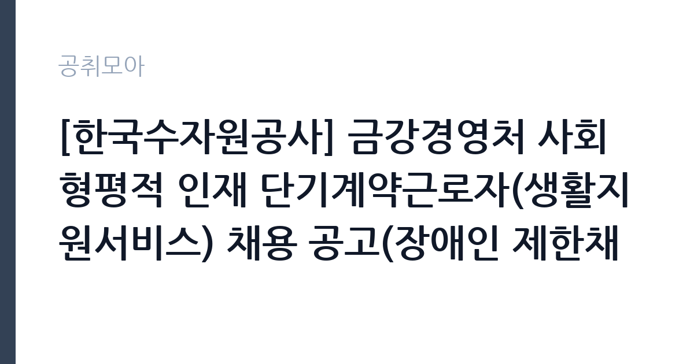

[공공기관] [한국수자원공사] 금강경영처 사회형평적 인재 단기계약근로자(생활지원서비스) 채용 공고(장애인 제한채용, 재공고)
한국수자원공사 · 전북 · 마감 2026-11-16 (D-14) · 출처 잡알리오

한눈에 보는 모집 조건
| 기관 | 한국수자원공사 |
|---|---|
| 공고명 | [한국수자원공사] 금강경영처 사회형평적 인재 단기계약근로자(생활지원서비스) 채용 공고(장애인 제한채용, 재공고) |
| 고용형태 | 일용직 |
| 근무지 | 전북 |
| 게시일 | 2026-11-02 |
| 마감일 | 2026-11-16 (D-14) |
지원자격, 이렇게 읽으세요
- 남자의 경우 병역필 또는 면제자(병역특례 근무중인 자 제외)
- 채용예정일로부터 현업 근무가 가능한 자
일용·단기 근로는 정해진 사업 기간이나 단기 업무를 위해 채용되는 형태입니다. 근무 일수와 일당이 정해지고 사업 종료 시 근로관계가 끝납니다. 계절 사업이나 행사 지원, 단기 대체 인력으로 활용되는 경우가 대표적입니다. 이번 공고는 한국수자원공사에서 직접 진행하는 자체 전형으로, 응시자격과 제출서류는 공고문에 항목별로 제시됩니다. 전기 직무는 전기기능사 이상의 자격을 요구하는 경우가 대부분입니다. 전기산업기사나 전기기사 자격을 우대하거나 필수로 두는 공고도 있습니다. 실무 경력 요건이 붙는 경우가 많아 경력 증명서와 자격증 사본을 준비해야 합니다. 고전압 설비를 다루는 직무는 안전 교육 이수 여부를 확인합니다. 채용 후에는 신원조회와 건강진단 절차가 이어집니다. 서류는 접수 마감 이후 보완이 되지 않으므로 자격 요건과 증빙 서류를 마감 전에 모두 갖춰야 합니다. 공고문에 명시된 우대 사항은 해당 여부를 확인해 증빙을 첨부해야 가점이 반영됩니다. 동일 직무 경력자와 경쟁하게 되므로, 관련 경험이 있다면 증명서에 업무 내용이 구체적으로 적히도록 요청하십시오. 이 공고 원문에 적힌 응시 조건 문구는 '연령, 성별, 학력 제한 없음'입니다. 문구를 그대로 읽고 본인 해당 여부를 하나씩 표시해 두면 서류 단계에서 탈락하는 일을 줄일 수 있습니다.
이 공고의 포인트
이 공고의 첫 번째 포인트는 고용 형태입니다. 사업 기간에 맞춰 채용되므로 근무 일수와 보수가 비교적 명확합니다. 대신 다음 근무지를 별도로 구해야 합니다. 두 번째는 업무 범위가 명확하다는 점입니다. 전기·설비 기술 직무로 채용되므로 배치 이후 담당 업무가 크게 흔들리지 않습니다. 세 번째는 근무지입니다. 전북 지역 근무로 수도권 공고에 비해 지원자 분포가 넓지 않아 상대적으로 경쟁이 분산되는 경우가 있습니다. 접수 기간이 길지 않아 서류 준비와 자격 확인을 동시에 진행해야 합니다. 같은 직무로 함께 올라온 공고 가운데 접수 마감이 가장 늦은 편이라 준비 시간을 상대적으로 확보할 수 있습니다. 선발 인원은 공고문에 명시되어 있으니 모집분야 항목을 함께 확인하십시오.
전형은 어떻게 진행되나
서류전형과 면접전형 외에 직무수행능력 평가가 붙는 경우가 있습니다. 평가 방식은 공고문에 구체적으로 적혀 있으므로 어떤 항목에 배점이 높은지 먼저 파악하십시오. 면접에서는 지원 동기보다 실제 업무 경험에 대한 질문이 많고, 답변의 구체성이 평가를 가릅니다. 전형 일정은 서류 마감 이후 빠르게 진행되므로 연락 가능한 번호를 정확히 기재하고 문자와 메일을 수시로 확인해야 합니다. 최종 단계에서는 결격사유 조회와 신체검사가 진행됩니다. 서류 단계에서 요건을 충족하지 못하면 이후 전형을 준비할 기회가 없으므로, 제출 전 요건 대조를 한 번 더 하는 것이 좋습니다.
원문에서 확인한 전형 방식
□ 「장애인고용촉진 및 직업재활법」 제2조에 따른 장애인 □ 연령, 성별, 학력 제한 없음 □ 남자의 경우 병역필 또는 면제자(병역특례 근무중인 자 제외) □ 우리 공사 인사규정에 의한 결격사유가 없는 자 □ 채용예정일로부터 현업 근무가 가능한 자
이런 분께 추천해요
- 전기 관련 자격과 실무 경력을 갖춘 분
- 안전 절차를 엄격히 지키는 분
- 야간·휴일 비상 대응이 가능한 분
지원 전 체크리스트
- 응시자격 요건과 경력 기준을 충족하는가 — 경력은 증명서로 입증해야 합니다
- 근무 기간과 일당·월급 지급 방식을 확인했는가
- 제출서류 목록을 모두 준비했는가 — 누락 시 서류 단계에서 탈락합니다
- 접수 마감 2026-11-16 이전에 접수 방식을 확인해 제출했는가
모집 일정과 제출 타이밍
공고 게시일은 2026-11-02, 접수 마감은 2026-11-16입니다. 준비 기간은 약 14일로 서류 준비와 자격 증빙을 함께 처리하기에는 넉넉하지 않은 편입니다. 첫 이틀 안에 공고문과 첨부 서식을 내려받아 요건을 확인하고 남은 기간에 증빙 서류를 발급받는 일정이 현실적입니다. 면접은 서류 합격자 발표 후 짧은 간격으로 진행되는 경우가 많으므로 서류 제출과 동시에 면접 준비를 시작하는 편이 안전합니다. 마감일에는 접수 시스템이 몰리므로 하루 전까지 제출을 마치는 것이 좋습니다. 마감 이후에는 어떤 사유로도 접수가 인정되지 않으므로 하루 전 제출을 목표로 하십시오. 전북 근무지는 지역 내 시설 배치가 넓어 차량 유무가 실질적인 조건이 되는 경우가 있습니다. 마감까지 2주 안팎이 있어 준비할 시간은 있지만 미루면 촉박해집니다. 선발 인원은 공고문의 모집분야 항목에 직종별로 제시되어 있습니다.
직무 이해하기: 공공기관
이 기관은 공공 서비스 제공을 목적으로 설립된 공공기관으로, 채용 공고에 따라 부서별 실무 인력을 선발합니다. 기관의 사업 범위와 조직 구성은 홈페이지에서 확인할 수 있으며 채용 절차는 자체 인사 규정을 따릅니다. 전기·설비 기술직은 건물과 시설의 전력 설비를 유지하는 일을 합니다. 수변전 설비와 배전반, 조명, 동력 설비를 점검하고 고장 부위를 찾아 수리합니다. 정전이나 누전 같은 사고가 발생하면 원인을 파악하고 복구 조치를 합니다. 안전 규정에 따라 작업 전 정전 확인과 절연 조치를 반드시 거쳐야 하며 작업 내용을 일지에 기록합니다. 야간과 휴일에 비상 연락을 받는 체계가 운영되기도 합니다. 업무는 혼자 처리하기보다 부서 단위로 나눠 진행되므로 담당 구역과 협업 범위를 입사 초에 확인하는 것이 중요합니다. 업무 강도와 근무 시간대는 부서 배치에 따라 달라지므로 면접에서 확인하는 것이 가장 정확합니다.
자기소개서 작성 팁
전기·설비 지원서는 자격과 안전 습관을 함께 보여주는 것이 핵심입니다. 담당했던 설비 규모와 용량, 수행한 점검 주기를 구체적으로 쓰십시오. 사고를 예방한 경험이나 위험 요소를 개선한 사례는 강한 소재입니다. 안전 규정을 지키는 태도를 분명히 밝히고 비상 대응 경험이 있다면 함께 서술하십시오. 직무 경험이 많지 않다면 경험의 양보다 과정을 구체적으로 쓰는 편이 낫습니다. 어떤 상황에서 무엇을 판단했고 어떤 결과가 나왔는지 순서대로 서술하면 신뢰가 생깁니다. 지원 동기와 기여 방안은 한 문단씩 짧게 유지하고, 가장 자신 있는 경험에 분량을 몰아주십시오. 마지막 문장은 포부보다 구체적인 실행 계획으로 끝내는 것이 좋습니다.
면접 준비 포인트
면접에서는 안전 절차와 고장 대응 능력을 확인합니다. 정전이 발생했을 때 어떤 순서로 확인하는지, 감전 위험이 있는 작업을 어떻게 진행하는지 묻습니다. 무전압 확인과 잠금 장치 사용을 먼저 언급하십시오. 설비 이력 관리 방식과 야간 대응 가능 여부도 질문 대상입니다. 답변은 상황, 판단, 조치의 순서로 정리하면 전달이 분명해집니다. 모르는 질문에는 모른다고 밝히고 확인 방법을 제시하는 편이 억지 답변보다 낫습니다. 마지막에는 근무 의사와 함께 2026-11-16 이후 일정에 언제든 응할 수 있다는 점을 전달하십시오. 면접은 공고문에 적힌 직무 내용을 얼마나 이해하고 있는지 확인하는 질문으로 시작하는 경우가 많으니, 모집분야 문구를 그대로 읽어 두는 것이 도움이 됩니다.
급여·근무조건 읽는 법
알리오(공공기관 경영정보 공개시스템) 2025년 결산 경영공시 기준으로 한국수자원공사 일반정규직 1인당 평균보수액은 8,229만원, 공시된 신입사원 초임은 4,171만원입니다. 무기계약직 1인당 평균보수액은 5,174만원으로 공시되어 정규직과 차이가 납니다. 평균보수액은 기본급에 고정수당·실적수당·성과상여금·급여성 복리후생비를 모두 합산한 값이라 월 기본급만 보고 판단하면 실제와 크게 어긋납니다. 이번 공고는 단기·일용 채용이라 위 정규직 평균보수는 적용되지 않습니다. 근무 일수와 일당 기준으로 산정되므로 공고문 처우 항목을 확인해야 합니다. 전기·설비 직무의 보수는 기관 임금표의 기본급에 자격 수당과 위험·특수 근무 수당이 더해지는 구조입니다. 자격 등급과 경력 연수에 따라 호봉이 달라지므로 경력 증빙이 급여 수준을 좌우합니다. 교대 근무가 포함되면 야간·휴일 근무수당이 붙어 실수령액이 기본급보다 높아지는 경우가 많습니다. 구체적인 금액은 공고문 처우표에서 확인하십시오. 2026년 적용 최저임금은 시급 10,320원, 월 환산 2,156,880원(주 40시간·209시간 기준)입니다. 고용노동부 고시 제2025-47호로 확정된 금액입니다. 공고문에 금액이 제시되지 않은 항목은 원문 보수표나 처우 설명에서 확인해야 하며 확인되지 않은 수치는 쓰지 않는 것이 원칙입니다. 비교할 때는 월 급여뿐 아니라 상여·명절휴가비·복지포인트·초과근무수당까지 포함한 연간 총액으로 계산하십시오. 기간제라면 계약 기간 동안의 총액을, 무기계약이라면 호봉 상승과 정년까지의 누적 소득을 기준으로 판단하는 편이 정확합니다.
자주 묻는 질문
- 선발 인원은 몇 명인가요?
공고문의 모집분야 항목에 직종별 인원이 표로 제시되어 있습니다. 첨부된 공고문 원문에서 확인하십시오. - 근무지는 어디인가요?
전북 지역의 한국수자원공사 소속 근무지입니다. 세부 주소와 출퇴근 조건은 원문 공고문에서 확인할 수 있습니다. - 보수는 얼마인가요?
채용 신분(일용·단기)과 기관 임금 규정에 따라 정해지며 구체적인 금액은 공고문 처우 항목에 제시됩니다. 금액이 공개되지 않은 경우에는 원문의 보수표를 확인하십시오.
함께 보면 좋은 공고
[공공기관] 2026년 한국특허정보원 체험형 청년인턴 채용 — 마감 2026-11-18[공공기관] 한국폴리텍대학 진주캠퍼스 행정지원직(사무직원 휴직 대체인력) 채용 공고 — 마감 2026-11-10[공공기관] 대구경북첨단의료산업진흥재단 2026년 3차 정원외 계약직원 채용공 — 마감 2026-11-17출처: 잡알리오 공개정보를 바탕으로 공취모아가 정리한 안내글입니다. 모집 조건·일정은 변경될 수 있으니 지원 전 반드시 원문 공고문을 확인하세요. 본 글은 정보 제공용이며 합격을 보장하지 않습니다.